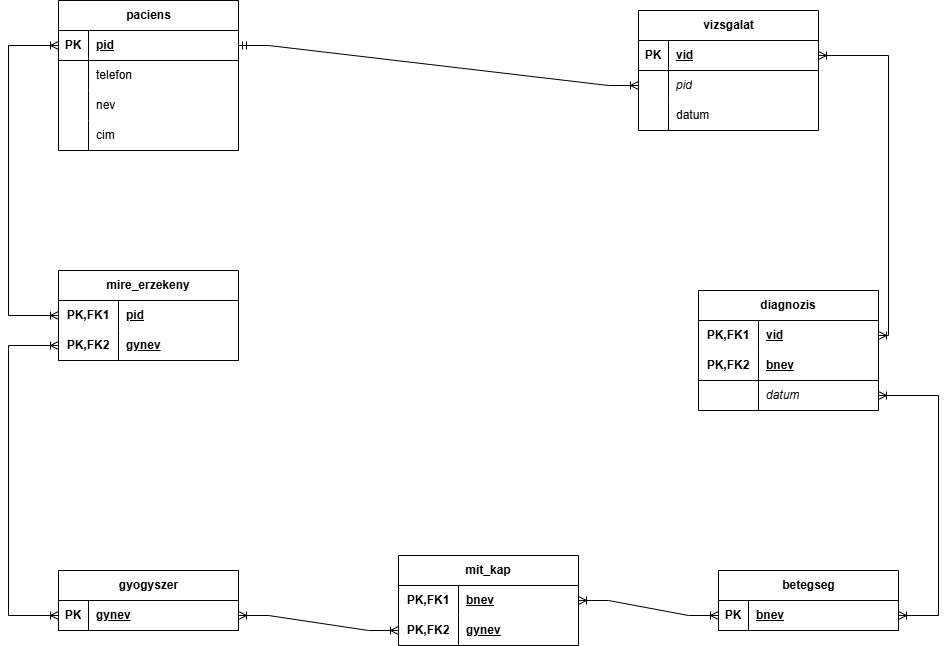

Orvosi betegnyilvántartás
Adatbázis készítésének folyamataira készítve
Egyed típusok, attribútomok
- Paciens(pid-PK,nev,cim,telefon)
- vizsgalat(vid-PK,pid-FK,datum)
- betegseg(bnev-PK)
- gyogyszer(gynev-PK)
Kapcsolatok
- paciens-vizsgalat
- vizsgalat-betegseg
- N-M (diagnózis) (vid-PK-FK,Pid-PK-FK,datum_FK)
- betegseg-gyogyszer
- N-M (mit-kap)(bnev-FK-PK, gynev-FK-PK)
- paciens-gyogyszer
- N-M (mire érzékeny) (Pid-FK-PK, gynev-FK-PK)
Relációs modell
